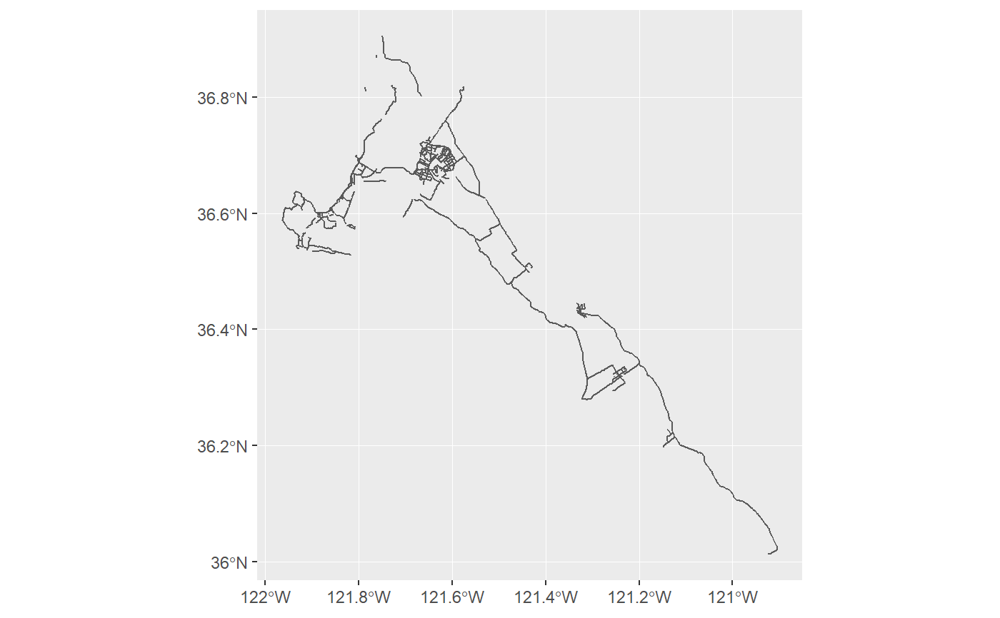

sal_get_dataset.RdGet a dataset as a useful R object.
sal_get_dataset(metadata)
| metadata | an object obtained by |
|---|
tibble::tibble, which will also be an sf::st_sf object if
metadata refers to data marked as having "geo" features.
library(salinasr) library(sf, quietly = TRUE)#>library(ggmap, quietly = TRUE) library(ggplot2) library(leaflet) bikeways_sf <- sal_get_metadata("bikeways") %>% sal_get_dataset() bikeways_sf %>% ggplot() + geom_sf()#>#>#> Warning: geocode failed with status OVER_QUERY_LIMIT, location = "Salinas, CA"#> Error in data.frame(ll.lat = ll[1], ll.lon = ll[2], ur.lat = ur[1], ur.lon = ur[2]): arguments imply differing number of rows: 0, 1#> Error in ggmap(sal_base_map): object 'sal_base_map' not found# outputs interactive leaflet map: bikeways_sf %>% leaflet() %>% addProviderTiles(leaflet::providers$OpenStreetMap, group = "Street") %>% addProviderTiles(providers$Esri.WorldImagery, group = "Optical") %>% addPolylines(label = ~ name, popup = paste0( "<b>Name:</b> ", bikeways_sf$name, "<br>", "<b>Jurisdiction:</b> ", bikeways_sf$juris, "<br>", "<b>Start:</b> ", bikeways_sf$start, "<br>", "<b>End</b>: ", bikeways_sf$end, "<br>", "<b>Miles:</b> ", round(bikeways_sf$miles, 2), "<br>", "<b>Feet:</b> ", round(bikeways_sf$feet, 2) ) ) %>% addLayersControl(baseGroups = c("Steet", "Optical"), options = layersControlOptions(collapsed = FALSE))